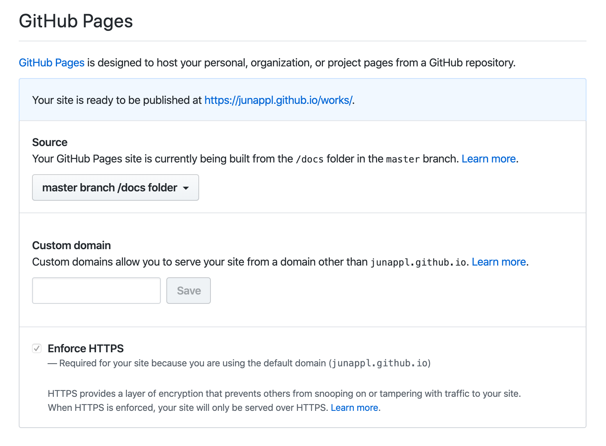
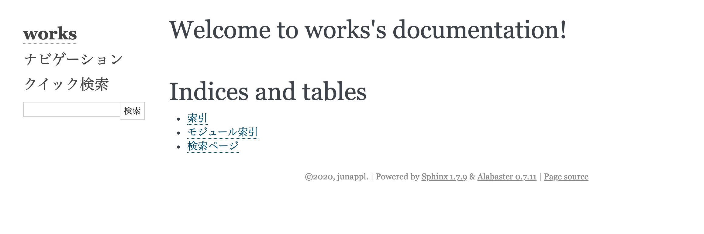

Sphinxプロジェクトの構築手順¶
やること
- SphinxでWebページを構築する
- Webページの編集にはマークダウン記法を使う
- GitHub Pagesで公開する
プロジェクトを作る¶
sphinx-quickstartコマンド
プロジェクト情報や拡張機能を設定する。
$ mkdir （プロジェクト名）
$ cd （プロジェクト名）
$ sphinx-quickstart
Welcome to the Sphinx 1.7.9 quickstart utility.
Please enter values for the following settings (just press Enter to
accept a default value, if one is given in brackets).
Selected root path: .
You have two options for placing the build directory for Sphinx output.
Either, you use a directory "_build" within the root path, or you separate
"source" and "build" directories within the root path.
> Separate source and build directories (y/n) [n]: y
Inside the root directory, two more directories will be created; "_templates"
for custom HTML templates and "_static" for custom stylesheets and other static
files. You can enter another prefix (such as ".") to replace the underscore.
> Name prefix for templates and static dir [_]:
The project name will occur in several places in the built documentation.
> Project name: （プロジェクト名）
> Author name(s): （著者名）
> Project release []:
If the documents are to be written in a language other than English,
you can select a language here by its language code. Sphinx will then
translate text that it generates into that language.
For a list of supported codes, see
http://sphinx-doc.org/config.html#confval-language.
> Project language [en]: ja
The file name suffix for source files. Commonly, this is either ".txt"
or ".rst". Only files with this suffix are considered documents.
> Source file suffix [.rst]:
One document is special in that it is considered the top node of the
"contents tree", that is, it is the root of the hierarchical structure
of the documents. Normally, this is "index", but if your "index"
document is a custom template, you can also set this to another filename.
> Name of your master document (without suffix) [index]:
Sphinx can also add configuration for epub output:
> Do you want to use the epub builder (y/n) [n]:
Indicate which of the following Sphinx extensions should be enabled:
> autodoc: automatically insert docstrings from modules (y/n) [n]:
> doctest: automatically test code snippets in doctest blocks (y/n) [n]:
> intersphinx: link between Sphinx documentation of different projects (y/n) [n]:
> todo: write "todo" entries that can be shown or hidden on build (y/n) [n]:
> coverage: checks for documentation coverage (y/n) [n]:
> imgmath: include math, rendered as PNG or SVG images (y/n) [n]:
> mathjax: include math, rendered in the browser by MathJax (y/n) [n]:
> ifconfig: conditional inclusion of content based on config values (y/n) [n]:
> viewcode: include links to the source code of documented Python objects (y/n) [n]:
> githubpages: create .nojekyll file to publish the document on GitHub pages (y/n) [n]: y
A Makefile and a Windows command file can be generated for you so that you
only have to run e.g. `make html' instead of invoking sphinx-build
directly.
> Create Makefile? (y/n) [y]:
> Create Windows command file? (y/n) [y]: n
Creating file ./source/conf.py.
Creating file ./source/index.rst.
Creating file ./Makefile.
Finished: An initial directory structure has been created.
You should now populate your master file ./source/index.rst and create other documentation
source files. Use the Makefile to build the docs, like so:
make builder
where "builder" is one of the supported builders, e.g. html, latex or linkcheck.
出力先の変更
GitHub Pagesを使うため、Makefileを変更する。
// 変更前
BUILDDIR = build
// 変更後
BUILDDIR = docs
.gitignoreファイルを追加する。
$ echo ".DS_Store" >> .gitignore
Sphinxプロジェクトをビルドする。
$ make html
バージョン
$ pip list
・・・
Sphinx 1.7.9
sphinx-autobuild 0.7.1
sphinx-markdown-tables 0.0.12
sphinx-rtd-theme 0.4.3
sphinxcontrib-toc 0.9.0
sphinxcontrib-websupport 1.1.0
sphinxjp.themes.basicstrap 0.5.0
・・・
GitHub Pages で公開する¶
GitHubにリポジトリを作成し、Pushする。
リポジトリの Settings > GitHub Pages へ移動し、 Source を「None」から「master branch/docs folder」へ変更する。

確認
https://（ユーザ名）.github.io/（プロジェクト名）/

マークダウンを使えるようにする¶
pip インストールする。
$ pip install --upgrade recommonmark
source/conf.py を編集する。
・・・
# -- General configuration ---------------------------------------------------
・・・
# Add any Sphinx extension module names here, as strings. They can be
# extensions coming with Sphinx (named 'sphinx.ext.*') or your custom
# ones.
extensions = [
'recommonmark', # 追加する
'sphinx.ext.githubpages',
'sphinx_markdown_tables', # 追加する
]
・・・
# The suffix(es) of source filenames.
# You can specify multiple suffix as a list of string:
#
source_suffix = ['.rst', '.md'] # コメントアウトを外す
# source_suffix = '.rst' # 削除orコメントアウトする
・・・
index.rstをindex.mdへリネームし、マークダウン記法に書き直す。
Sphinxのテーマをへ変更する¶
Sphinxのテーマ
Sphinx Themes https://sphinx-themes.org/
「basicstrap」に変更する場合
source/conf.py を編集する。
・・・
# -- Options for HTML output -------------------------------------------------
# The theme to use for HTML and HTML Help pages. See the documentation for
# a list of builtin themes.
#
# html_theme = 'alabaster' # コメントアウトする
html_theme = 'basicstrap' # 好きなテーマを追加する
# Theme options are theme-specific and customize the look and feel of a theme
# further. For a list of options available for each theme, see the
# documentation.
#
# html_theme_options = {}
# html_theme_optionsを必要に応じて追加する
html_theme_options = {
# Enable inner theme by Bootswatch. Defaults to false
'inner_theme': True,
# Set the name of innner theme. Defaults to 'bootswatch-simplex'
'inner_theme_name': 'bootswatch-flatly',
}
・・・
＜参考＞ conf.py sample — sphinx theme for basicstrap style documentation https://pythonhosted.org/sphinxjp.themes.basicstrap/options.html#sample-and-html-theme-options
その他 Sphinxの設定¶
設定 ー Sphinx 4.0.0+/7307157b ドキュメント https://www.sphinx-doc.org/ja/master/usage/configuration.html
変更した項目
- General configuration
- html_show_sphinx
- html_use_index
- Options for HTML output
- html_sidebars